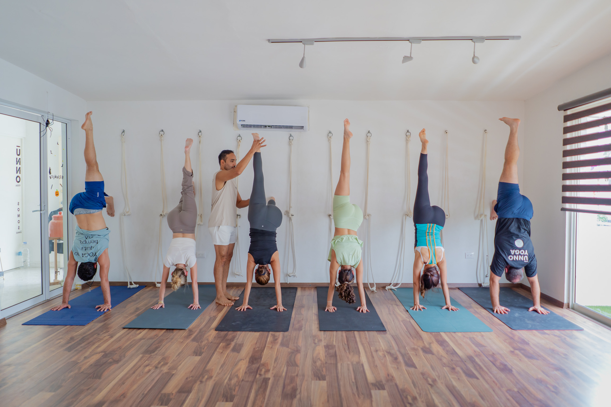
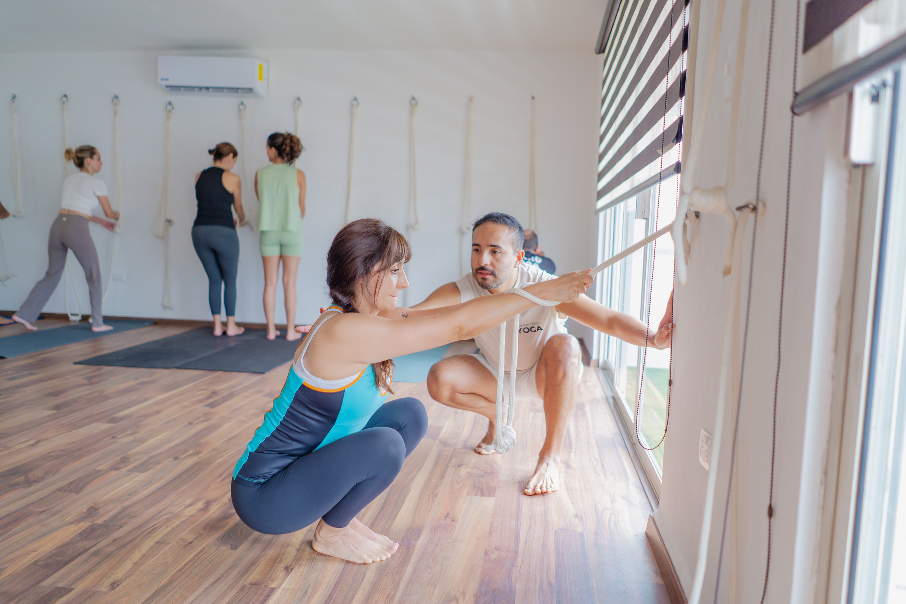
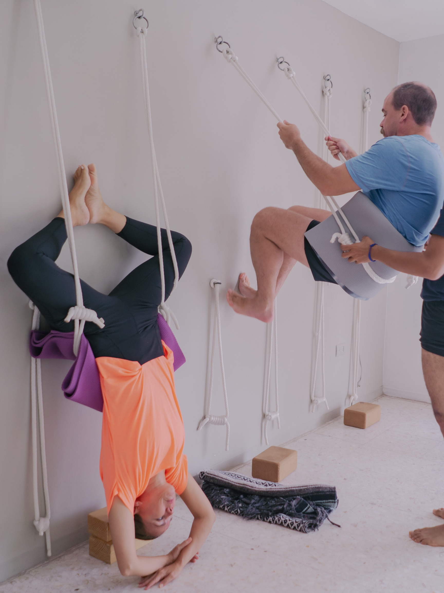
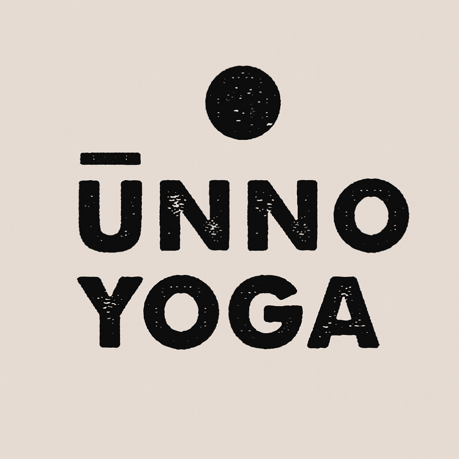
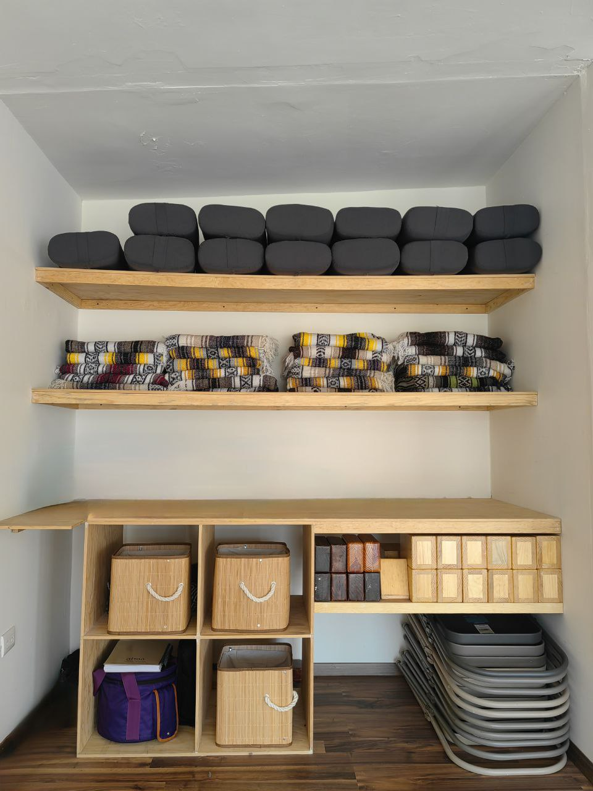
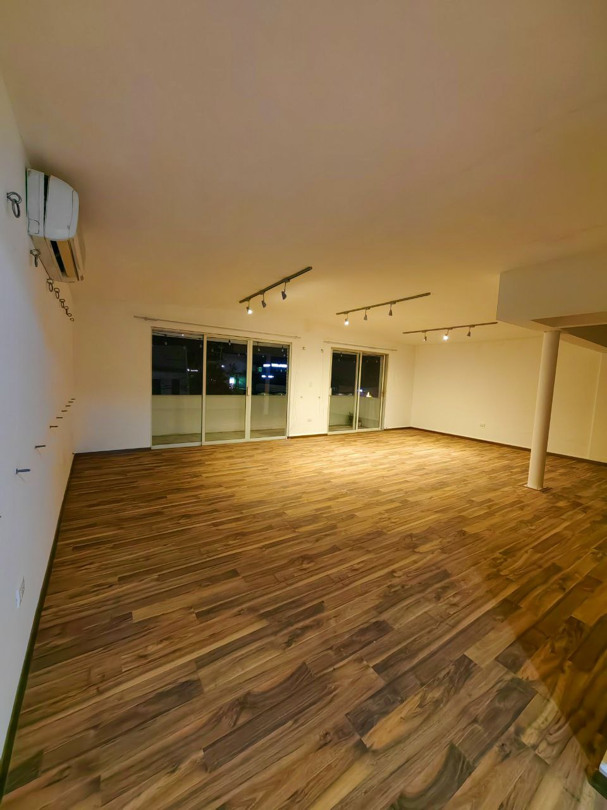

Centrito Valle · San Pedro Garza García
La ciencia y el arte
de habitar tu cuerpo.
Práctica
Tres disciplinas.
Una sola intención: precisión, quietud y presencia.
El método Iyengar trabaja la precisión postural y el uso consciente de apoyos para acceder con seguridad a cada asana. Desarrolla fuerza, alineación y atención sostenida. Nuestra instructora cuenta con certificación oficial B.K.S. Iyengar.
Posturas pasivas sostenidas con apoyos que inducen una relajación profunda del sistema nervioso. Ideal para recuperación, estrés crónico o como complemento a cualquier práctica activa. El descanso como disciplina consciente.
Secuencias fluidas que sincronizan movimiento y respiración. Cada transición es parte de la práctica. Construye calor interno, fuerza funcional y coordinación mente-cuerpo en un ritmo que invita a la presencia total.
Agenda
Lunes — Jueves
Días de práctica
10:00 — 12:00
Sesión matutina
18:30 — 21:30
Sesión vespertina
Viernes — Domingo
Descanso del estudio
Cerrado
Se recomienda reservar con anticipación por WhatsApp.
Los horarios pueden variar en fechas especiales.
Galería






Testimonios
Reseñas reales de alumnos
en Google Maps.
"Llevaba años buscando un estudio que enseñara Iyengar de verdad. La atención a la alineación y el uso de los apoyos cambiaron completamente mi práctica."
Sofía R.
Google Maps
"El instructor tiene una paciencia y precisión increíbles. Cada clase siento que aprendo algo nuevo sobre mi propio cuerpo. El espacio es hermoso y muy tranquilo."
Carlos M.
Google Maps
"Llegué con dolor de espalda crónico. Después de dos meses con el yoga restaurativo, la diferencia es notable. Es más que una clase — es una práctica de vida."
Alejandra V.
Google Maps
Cómo llegar
Dirección
Río Orinoco 101, 3er piso
Centrito Valle
San Pedro Garza García, NL
Acceso
Estamos en el 3er piso — busca el elevador al llegar.
Horarios
Contacto
+52 811 071 6341Comienza hoy
Escríbenos por WhatsApp para reservar tu lugar. Te confirmamos en minutos.
Reservar por WhatsApp